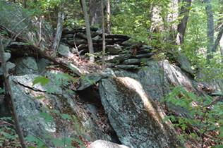

Image 68

Image 74
Jim Wilson, a friend of mine from the Bethlehem, PA, area and the one who rediscovered the two walls on the side of Blue Mountain, PA, that A.E. Berlin had described in the late 1880s as an Indian deer weir (I highly doubt this interpretation), was bird watching near the Delaware Water Gap Visitor's Center about three weeks ago, and came across an unusual and impressive assemblage of stone features. He invited me to see this site, and so latethis week I drove to the Visitor's Center at the Water Gap to meet him. The area containing the stonework is on the other side of a bog just to the east of the Visitor's Center, and some of the stonework is visible from it. We got in his truck and drove to the other side of the bog, where we parked. This area is beautiful, with maple and hemlock trees predominating. Several rocky ridges run north-south, with narrow terraces separating them. These terraces probably formed when the river level was much higher at the end of the last ice age.
We walked along one of the valleys or terraces between two ridges, the one on the left being very rocky and steep (Image 104) with large broken slabs of shale and sandstone having tumbled to the forest floor below.
The first feature we encountered was a low stone wall that was perpendicular to the flat terrace we were walking on (Image 67). It originated from a curious terrace fill across a narrow gully, which I first thought might be a dam of some sort (Image 68), and cut the slope to the rocky ridge to the west, and then ended.
We followed along the east side of the rocky ridge and soon came upon the first non-wall construction, a carefully built fill between two outcrops (Image 74). The stone comprising the construction (I hesitate what to call it. It does not seem to be a cairn, as it has no particular shape to it) was made of local shale and sandstone flat slabs, carefully piled.
Then we began to see more constructions of this type, such as the wall like connection along a rocky flat outcrop (Image 80). A short while further on Jim and I came upon a curious looking chamber, formed by the vertical wall of an outcrop and a vertical slab of stone set apart from it. Large flat stones formed the roof (Image 84). This little chamber then merged into a short stone wall at the base of the rocky ridge.
We kept seeing stone accents on the rocky ridge as we followed it north along its base, such as an impressive 'V'-shaped fill between two boulders (Image 86) that reminded me of others I've seen at the Oley Hills site and in S. Newfane, VT. On the opposite side of the V-fill was another stone accent (Image 87)

Further on we came upon a large vertical outcrop, on top of which, to the left, was a small stone construction (Image 92), and an overhanging slab in the middle. Other constructions drew our attention, such as one nicely formed pile of stones (Image 96) and others on either side of a large boulder (Image 100).
Just to the east of where we were walking was a terrace bathed in soft light overlooking the Delaware River below (Image 106). Along this terrace edge was a stone wall, faintly visible in the image. When we reached the terrace, I observed a low wall that traced the edge of the terrace for hundreds of feet both north and south (Image 114), and it reminded me of a similar wall on Morgan Mountain in Alabama that Harry Holstein, an archaeologist there, had told me about. We followed the wall to near where it petered out, and then we headed down slope to another wall that paralleled the one we were just on. Walking north along this wall, I soon saw in the distance another wall cutting across the direction we were headed. Where the two walls diverged was not a sharp corner, but instead a lazy curve (Image 118).
This other wall was much higher than the one we had been following, and it had on top of it, every so often, large water rounded cobbles of quartzite that contrasted color-wise with the gray of the shale and sandstone (Images 119, 120). While this wall could be interpreted by some as Colonial, the quartzite accents on top
imparted a unique character that separated it from any colonial interpretation. One has to wonder where the quartzite came from. There were no stones of this kind that I observed on the ground nearby or on the way to this feature, and I could only conclude that the stones must have come from the Delaware River far below, which then had been carried to the wall site. How else?
On our way back to Jim's truck, we returned to the ridge overlooking the Delaware River and followed another portion of the wall (Image 128) we were on just earlier. We then headed west to the bog, where Jim showed me another unusual wall on top of a rocky spine separating a vernal pool to our left (east) and the bog to the west (Image 132).
We followed this upslope (Image 136). Looking back (Image 139), I could see where we had just come from.

In hindsight, I am totally convinced that major features such as the Delaware River and other similar major river thoroughfares for the Indians had, along its rocky banks, accents in stone, whether they be cairns or the type of constructions I had just seen, or walls that traced ridges or unusual landscape features. A year ago, I had seen unusual looking stone piles along the slopes of the Delaware River banks on the NJ side north of Port Jervis, and this whetted my appetite for seeing more. Most of my own research has focused on northern New England, but I am convinced that I and others can find important stone constructions much closer to home. The Northeast is full of such features waiting to be discovered. Now, if we could only convince archaeologists to open their eyes to what's around them!